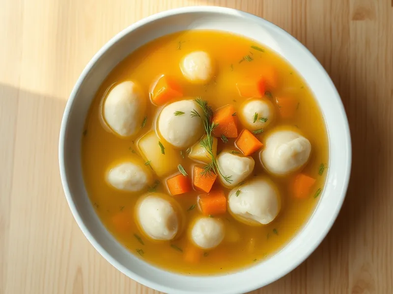

Суп с клёцками на курином бульоне
Простой суп на бульонном кубике с картошкой и нежными клёцками из яйца и муки
30 мин4 порц.208 ккал на порциюБ 8 · Ж 3 · У 37Русская кухня
Открыть в приложении: порции, таймеры, список покупок
Продукты на 4 порц.
- Бульонный кубик2 шт
- Вода1800 мл
- Картофель3 шт
- Морковь1 шт
- Лук репчатый1 шт
- Яйцо куриное1 шт
- Мука пшеничная4 ст. л.
- Молоко50 мл
- Соль2 щеп.
- Укроп по желаниюпо вкусу
Как готовить
- Вскипятите 1,8 л воды, растворите бульонные кубики. Положите картофель кубиками, морковь кружками и мелко нарезанный лук, варите на среднем огне 12 минут.
- Пока варятся овощи, взбейте вилкой яйцо с молоком и солью, вмешайте муку. Тесто должно получиться густым, как сметана, и тянуться с ложки, 3 минуты.
- Набирайте тесто чайной ложкой, смоченной в бульоне, и опускайте в кипящий суп небольшими кусочками.
- Варите клёцки на среднем огне 5-6 минут после того, как они всплывут: на разрезе они должны быть пышными, без сырой середины.
- Снимите суп с огня, посыпьте рубленым укропом и дайте постоять 2 минуты.
Совет. Окунайте ложку в горячий бульон перед каждой клёцкой, тогда тесто легко соскользнёт. Слишком жидкое тесто расплывётся, добавьте 1 ст. л. муки.